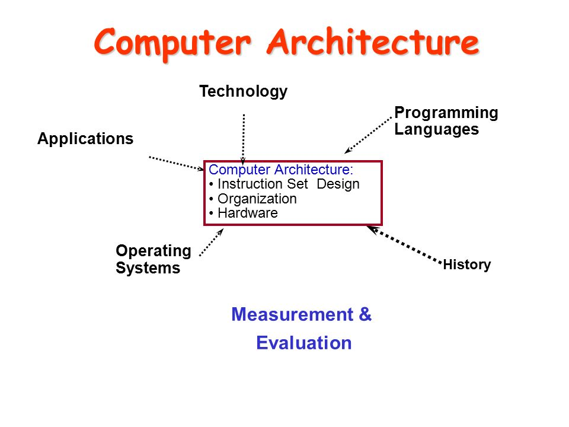
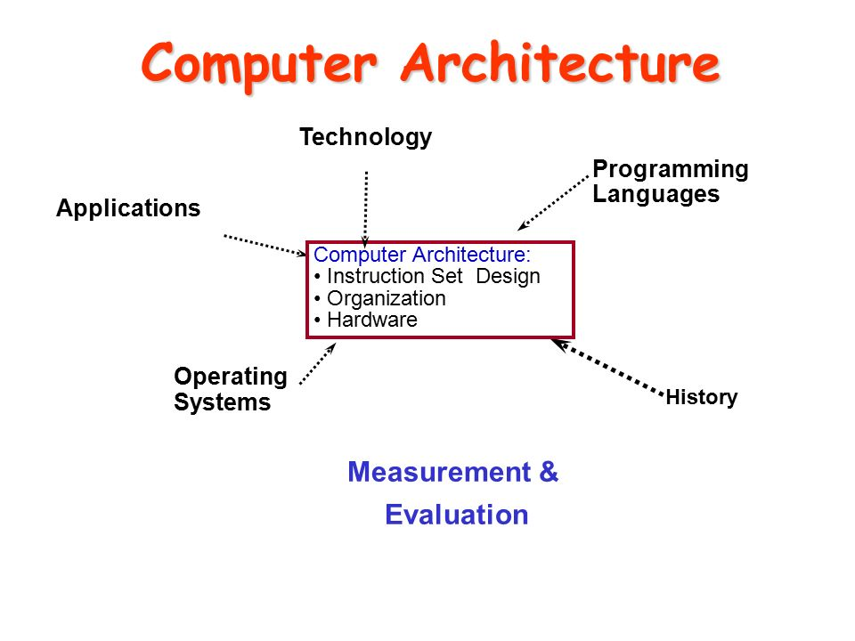

The first documented computer architecture was in the correspondence between Charles Babbage and Ada Lovelace, describing the analytical engine. When building the computer Z1 in 1936, Konrad Zuse described in two patent applications for his future projects that machine instructions could be stored in the same storage used for data, i.e., the stored-program concept.[3][4] Two other early and important examples are:
The term “architecture” in computer literature can be traced to the work of Lyle R. Johnson and Frederick P. Brooks, Jr., members of the Machine Organization department in IBM's main research center in 1959. Johnson had the opportunity to write a proprietary research communication about the Stretch, an IBM-developed supercomputer for Los Alamos National Laboratory (at the time known as Los Alamos Scientific Laboratory). To describe the level of detail for discussing the luxuriously embellished computer, he noted that his description of formats, instruction types, hardware parameters, and speed enhancements were at the level of “system architecture”, a term that seemed more useful than “machine organization”.
Subsequently, Brooks, a Stretch designer, opened Chapter 2 of a book called Planning a Computer System: Project Stretch by stating, “Computer architecture, like other architecture, is the art of determining the needs of the user of a structure and then designing to meet those needs as effectively as possible within economic and technological constraints.
Brooks went on to help develop the IBM System/360 (now called the IBM zSeries) line of computers, in which “architecture” became a noun defining “what the user needs to know”.[9] Later, computer users came to use the term in many less explicit ways.
The earliest computer architectures were designed on paper and then directly built into the final hardware form.[11] Later, computer architecture prototypes were physically built in the form of a transistor–transistor logic (TTL) computer—such as the prototypes of the 6800 and the PA-RISC—tested, and tweaked, before committing to the final hardware form. As of the 1990s, new computer architectures are typically "built", tested, and tweaked—inside some other computer architecture in a computer architecture simulator; or inside a FPGA as a soft microprocessor; or both—before committing to the final hardware form.
 
